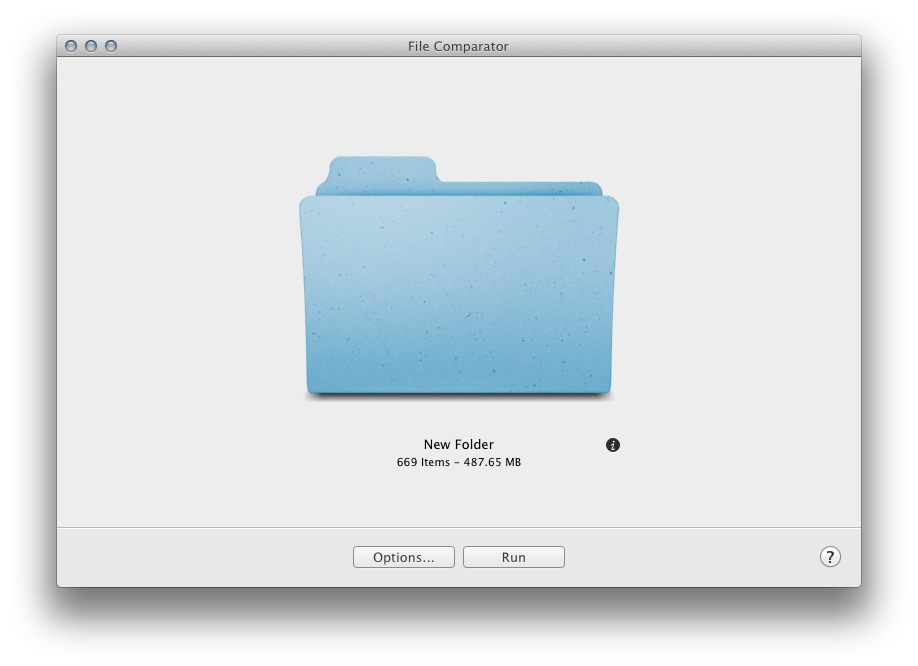

After dragging a folder into the main window (or by using File > Choose Source…), the application fetch the number of files and the total size of the folder.
• Info button:
The info button near the folder image open a panel with the representation of the biggest items from the folder.
• Options:
Open the panel to choose additional options for the comparison.
• Run:
Run the analyse of the folder and compare files depending of options selected.